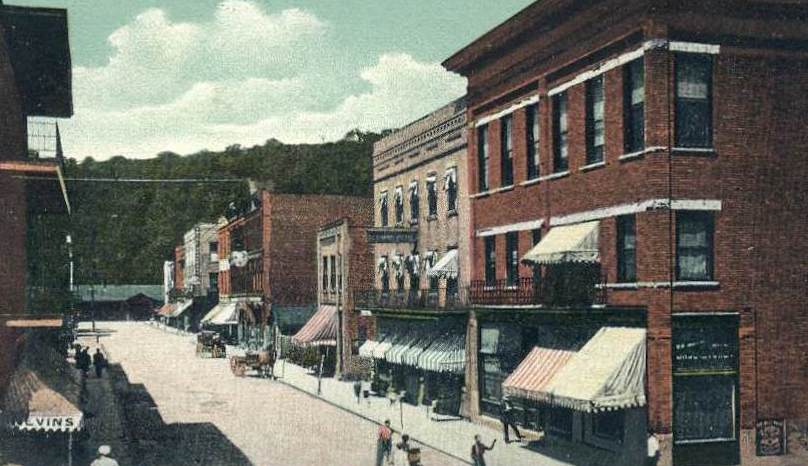

The History of Fifth & Ford
11.23.2018
We are proud to be from Ford City, nestled in the foothills of the Appalachians in Western Pennsylvania, 40 minutes northeast of Pittsburgh and 5 minutes south of Kittanning. We know many people reading this are, too. The history of our region is the history of industrialization and the “American century.” The glass, steel, coal, and pottery industries brought wealth and colorful personalities to the area. We’ve seen industries come and go, and Ford City is starting to once again brush off her “Rust Belt” dust.
 Locals might have known the building at the corner of Fifth Avenue and Ford Street as the American Legion Building or as the Aluminum, Brick, and Glassworkers Local 158. However, the storefront started out in 1907 as Weis’ Deutsche Apotheke, a pharmacy catering to German immigrants who moved to America to work in the blossoming plate glass industry. To the left, you’ll see a snapshot of the July 4th, 1905 Firemens’ Street Fair, showing the building under construction. Have you heard of the American Legion shooting range in the basement or the ballroom on the third floor? This ballroom was originally the home of the Eagles Aerie 606. Have you scaled the beams in the attic or sipped drinks with friends in the second floor bar?
Locals might have known the building at the corner of Fifth Avenue and Ford Street as the American Legion Building or as the Aluminum, Brick, and Glassworkers Local 158. However, the storefront started out in 1907 as Weis’ Deutsche Apotheke, a pharmacy catering to German immigrants who moved to America to work in the blossoming plate glass industry. To the left, you’ll see a snapshot of the July 4th, 1905 Firemens’ Street Fair, showing the building under construction. Have you heard of the American Legion shooting range in the basement or the ballroom on the third floor? This ballroom was originally the home of the Eagles Aerie 606. Have you scaled the beams in the attic or sipped drinks with friends in the second floor bar?
The original owner of the building, David Goldman, first planned to build an opera house on the site, but modified the plans into the three-story brick building we know now. Here’s an excerpt from the Daily Times on September 27, 1905 detailing the construction. “The first floor will now have three store rooms; two fronting on Ford Street and the other one on Fifth Avenue. Several flats will be on the second floor, and the entire third floor will be rented to the Ford City Eagles Aerie 606. The eagles will have it furnished in fine style with a kitchen, dining room, lodge room, parlors and ballroom.”
Over the next year, the building at the corner of Fifth Avenue and Ford Street will see some changes. Help us tell the story of the building at Fifth & Ford by sharing your memories, pictures, and legends of the building at this link.. The building has been vacant for over twenty years and needs shined up, but she is a beauty and a true gem of Ford City.
We’re four siblings with different skill sets, interests, and educational backgrounds, but with the same affection for our hometown. You may have noticed that our parent company is called “Constellations LLC.” The stars in a constellation aren’t physically linked together by anything; they just happen to lay in the same patch of sky. (The stars in Orion — or any other constellation! — are many light years away from each other.) It is human imagination that links stars together into a constellation, into a story. Ford City has provided the backdrop, and it’s up to all of us to write the story.
